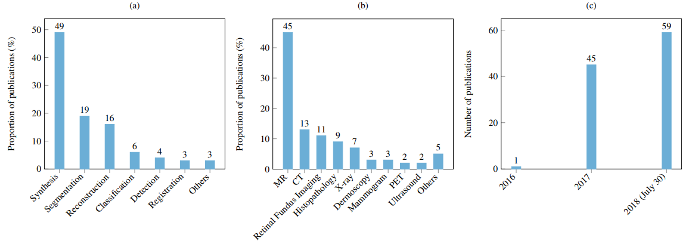

Salome Kazeminia [a], Christoph Baur [b], Arjan Kuijper [c], Bram van Ginneken [b], Nassir Navab [b], Shadi Albarqouni [b], Anirban Mukhopadhyay [a]
a)Department of Computer Science, TU Darmstadt, Germany
b)Computer Aided Medical Procedures (CAMP), TU Munich, Germany
c)Fraunhofer IGD, Darmstadt, Germany
d)Radboud University Medical Center, Nijmegen, The Netherlands
This Paper gives an idea about the usage and imapct of Generative Adverserial Networks in the field of Medical Imaging.In the following sections I will be explaining the impact of GANs in different medical imaging modalities, a bar graph depicting the number of papers that have been published using GANs over the years as well as number of papers using GANs with respect to Modalities.
The adversarial loss brought by the discriminator provides a clever way of incorporating unlabeled samples into training and imposing higher order consistency. This has proven to be useful in many cases, such as domain adaptation, data augmentation, and image-to-image translation.
Traditional similarity objectives comprise pixelwise losses such as the L1 or L2-distance, both of which induce blurry results and lack the incorporation of context. The adversarial training concept behind GANs theoretically eliminates the need to model explicit pixelwise objective functions by learning a rich similarity metric to tell real and fake data apart. This allows to optimize for concepts in images beyond the pixel-level, leading to more realistic result
The main advantage of the GAN is to find similarities that map a candidate model to the distribution of real data by focusing on the underlying probability density of data. It leads to very sharp distributions around data, which can be used for degeneration of that
Latent Space to Image : Involves the usual task of generating synthetic images from randomly initialized noise given to Generator
Image to Image: Generator is given an image as input, and Generator would generate an Image whose distribution is close to real data distribution. These networks not only learn the mapping from input image to output image, but also learn a loss function to train this mapping
Though GANs show such inherent advantages over discriminatively trained CNNs, there are some challenges as well:
Mode Collapse: when G collapses to map all latent space inputs to the same data and
Instability: which leads to the generation of different outputs for same input.The main reason behind such a phenomena is vanishing gradients through the optimization procedure
DC GAN: Deep Convolutional GANs, typically Encoder Decoder type architechture, Mostly Convolutional Blocks, No fully conected layers.But this also suffers from modal collapse and instability(latent data vector being mapped to same data).
cGAN:Conditional GAN,introduce some prior knowledge into the GAN network.In the cGAN, the generator is presented with random noise z as well as some prior information c jointly. Additionally, the prior knowledge c is fed into the discriminator together with the corresponding real or fake data.
M-GAN : Markovian GAN,is also a variant of the conditional GAN. The MGAN heavily utilizes a pre-trained VGG19 network with fixed weights to extract high-level features for both transfering style to a target texture and simultaneously preserving the image content. In the MGAN, both discriminator and generator network are prepended with a VGG19 network to extract featuremaps.
cycle-GAN:
It is a form of a style transfer, where you try to transfer the image from one domain X to another domain Y.This typically uses two Generators one generator(G:X->Y) and other (F:Y->X) , and these genrators improve its learning from the back prop that happen in 2 Discriminators Dx and Dy.So the Min Max optimization happens between (Dy,G) and (Dx,F).
Adverserial loss: Is used to make sure both G and F generate images as close to reality as in domain Y and domain X respectively.
Cyclic Loss: It relies on the expectation that if you convert an image to the other domain and back again, by successively feeding it through both generators, you should get back something similar to what you put in.Together the optimization is done by minimizing linear combo of these two loss functions.
Denoising :
Image acquisition of several forms of diagnostic radiology involves the tradeoff between contrast and radiation hazard. The better contrast might lead to better diagnosis but might expose the patient to unwanted excessive radiation as well. Images acquired under low contrast, on the other hand, suffers from low Signal-to-Noise Ratio.
State-of-the-art denoising algorithms suffer from blurring effect, which is taken care of by several engineering tweaks and perceptual assumptions. The ability of GANs for generating realistic looking images provides a nice alternative .
It seems that an adequate objective metric to evaluate the strength of methods in preserving important medical information of the image is not available yet.
As PSNR,MSE, SSIM, SD, and mean - the most commonly used metrics in the evaluation of de-noising methods - are not sensitive enough to recognize texture details, the RoI of any image should be segmented to be measured by metrics, which is an expensive procedure. So presenting a new metric to this goal can be a subject of future works
Reconstruction:
Fast MR reconstruction retaining details is a core problem in medical imaging. Solving the slow acquisition and reconstruction can directly benefit lingering MR problems like presence of involuntary and voluntary motion artifacts
The promise of realistic looking images with fast inference makes GAN an obvious candidate for solving the MR reconstruction problem. Unlike de-noising, GAN-based MR reconstruction research has a major focus of modifying well-known architectures in addition to combination of loss functions for controlling the training procedure
Segmentation:
Key Terms: Conitional Random Fields, statistical shape models, SegAN, SCAN, VoxelAtlasGAN
GAN-based segmentation techniques so far focus on well known GAN architecture (overwhelming majority uses U-net as the generator) with combined loss functions. Unlike the previous applications relying on end-to-end GANs,segmentation applications using GAN often require pre- and post-processing steps
It seems that from the known DNN architectures, U-Net and ResNet - due to providing general identification features-are the most popular segmentation networks.
UNIT and CycleGAN are two equally valid frameworks for unpaired cross modality synthesis. It was found that these two frameworks performed almost equally well for the transformation between T1 and T2-weighted MR images
Couple of works have used a multi-scale L1 loss in the discriminator where features coming from different depths are compared. This was demonstrated to be effective in enforcing the multi-scale spatial constraints on segmentation maps and the system achieved state-of-the-art performance in the BRATS 13 and 15 challenges.
Detection:
Unsupervised algorithms, such as GAN have the potential to be effective in such a setting. The main driving idea of anomaly detection is to train GAN on normal images, so that inference on diseased images would lead to incomplete reconstructions. Such incompleteness is typically associated with the regions of anomaly.
Unsupervised GAN-based architecture (AnoGAN) that during testing, given an input diseased image generates the corresponding healthy image version. The difference between generated and input images is considered as anomalies.
Papers proposed in anomaly detection by GANs have more structural complexity in comparison with previous applications because they benefit from different aspects of GANs. In fact, the role of the discriminator is more highlighted in practice. Also, the extracted map, which defines the latent aspect of recognizing the healthy and anomaly images is used in a more perceptual way
Classification:
One of the works implemented WGAN and InfoGAN for unsupervised cell-level feature representation learning in histopathology images, another Work combined WGAN and CatGAN for unsupervised and semi-supervised feature representation learning for dermoscopy images. Both works extract features from the discriminator and build a classifier on top.
Couple of works also adopted the semi-supervised training scheme of DCGAN for chest abnormality classification and retinal vessel patches classification, respectively. They found that the semi-supervised DCGAN can achieve performance comparable with a traditional supervised CNN with an order of magnitude less labeled data. Furthermore, they have also shown that the adversarial loss can reduce domain overfitting by simply supplying unlabeled test domain images to the discriminator.
Studies applied a two stage process, with the first stage learned to augment the images and the second stage learned to perform classification by adopting the traditional classification network. The two stages are trained disjointedly without any communication in between.
The advantage is that these two components can be replaced easily if more advanced unconditional synthesis architectures are proposed whereas the downside is that the generation has to be conducted for each class separately (N models for N classes), which is not memory and computation efficient. A single model that is capable of performing conditional synthesis of multiple categories is an active research direction.
There was also a work which found that using separate GAN (DCGAN) for each class resulted in better performance in classification than using a unified GAN (ACGAN) for all classes
Synthesis:
Unconditional Image Synthesis: using Regular GAN's. For clarity, we refer to the original GAN framework as the unconditional or unsupervised GAN, in contrast to the conditional GAN
Conditional Image Synthesis: using conditional GAN's . The cGAN framework has also been successfully turned into a supervised generative framework by conditioning both the generator and the discriminator on prior knowledge, rather than noise alone.
